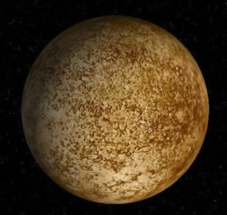

|
O Sistema Solar é constituído por oito planetas principais, são eles: Mercurio, Venus, Terra, Marte, Júpiter, Saturno, Urano e Netuno.
Mercúrio é o menor e mais interno planeta do Sistema Solar, Sua órbita tem a maior excentricidade e seu eixo apresenta a menor inclinação em relação ao plano da órbita dentre todos os planetas do Sistema Solar. |
| Mercúrio | |||||||||||
|---|---|---|---|---|---|---|---|---|---|---|---|
|  |
|
Fonte wikipedia